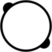

<title>Polar Opposite Map</title>
<meta charset="utf-8">
<meta http-equiv="X-UA-Compatible" content="IE=edge,chrome=1">
<meta name="viewport" content="width=device-width,initial-scale=1">
<meta http-equiv="Content-type" content="text/html;charset=UTF-8">
<meta name="author" content="Chris Andrejewski">
<link rel='stylesheet' href='index.css'>
<link rel="stylesheet" href="https://unpkg.com/leaflet@1.0.1/dist/leaflet.css" />

<main>
<nav>
  <div class='logo'>
    
  </div>
  <div class='about'>
    <h1>Polar Opposite Map</h1>
    <h2>What is on the exact other side of the planet</h2>
  </div>
  <div class='flex-separator'></div>
  <div class='verbs'>
    <a href='http://chrisandrejewski.com'>Made by Chris</a>
    <a href='https://github.com/andrejewski/polar-opposite-map'>View source</a>
  </div>
</nav>

<div class='maps'>
  <div id='local-map' class='normal-map'></div>
  <div id='remote-map' class='opposite-map'></div>
</div>

<div class='overlay'>
  <button id='auto-locate' class='button--default'>Use my location</button>
</div>
</main>

<script src="https://unpkg.com/leaflet@1.0.1/dist/leaflet.js"></script>
<script
  src="https://code.jquery.com/jquery-3.1.1.min.js"
  integrity="sha256-hVVnYaiADRTO2PzUGmuLJr8BLUSjGIZsDYGmIJLv2b8="
  crossorigin="anonymous"></script>
<script src='index.js'></script>